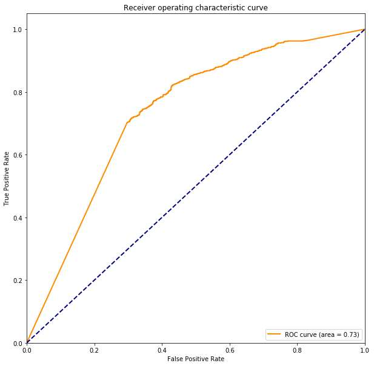

precision recall f1-score support
neg 0.73 0.74 0.74 1022
pos 0.76 0.75 0.76 1111
accuracy 0.75 2133
macro avg 0.75 0.75 0.75 2133
weighted avg 0.75 0.75 0.75 2133
0.7477730895452415
0.8132040209891832
<Figure size 432x288 with 0 Axes>
In [76]: runfile('/Users/jiyewang/Desktop/sentiment/a1.py', wdir='/Users/jiyewang/Desktop/sentiment')
[[664 358]
[282 829]]
precision recall f1-score support
neg 0.70 0.65 0.67 1022
pos 0.70 0.75 0.72 1111
accuracy 0.70 2133
macro avg 0.70 0.70 0.70 2133
weighted avg 0.70 0.70 0.70 2133
0.6999531176746366
0.7337860498378606
<Figure size 432x288 with 0 Axes>

In [77]: runfile('/Users/jiyewang/Desktop/sentiment/a1.py', wdir='/Users/jiyewang/Desktop/sentiment')
[[751 271]
[291 820]]
precision recall f1-score support
neg 0.72 0.73 0.73 1022
pos 0.75 0.74 0.74 1111
accuracy 0.74 2133
macro avg 0.74 0.74 0.74 2133
weighted avg 0.74 0.74 0.74 2133
0.7365213314580403
0.8051983280519832
<Figure size 432x288 with 0 Axes>
In [78]: runfile('/Users/jiyewang/Desktop/sentiment/a1.py', wdir='/Users/jiyewang/Desktop/sentiment')
[[735 287]
[319 792]]
precision recall f1-score support
neg 0.70 0.72 0.71 1022
pos 0.73 0.71 0.72 1111
accuracy 0.72 2133
macro avg 0.72 0.72 0.72 2133
weighted avg 0.72 0.72 0.72 2133
0.7158931082981715
0.791113064339702
<Figure size 432x288 with 0 Axes>
In [79]: runfile('/Users/jiyewang/Desktop/sentiment/a1.py', wdir='/Users/jiyewang/Desktop/sentiment')
[[674 348]
[313 798]]
precision recall f1-score support
neg 0.68 0.66 0.67 1022
pos 0.70 0.72 0.71 1111
accuracy 0.69 2133
macro avg 0.69 0.69 0.69 2133
weighted avg 0.69 0.69 0.69 2133
0.6901078293483357
0.7346007105602929
<Figure size 432x288 with 0 Axes>
In [80]: runfile('/Users/jiyewang/Desktop/sentiment/a1.py', wdir='/Users/jiyewang/Desktop/sentiment')
[[740 282]
[293 818]]
precision recall f1-score support
neg 0.72 0.72 0.72 1022
pos 0.74 0.74 0.74 1111
accuracy 0.73 2133
macro avg 0.73 0.73 0.73 2133
weighted avg 0.73 0.73 0.73 2133
0.7304266291608064
0.8018665858758088
/anaconda3/lib/python3.7/site-packages/sklearn/linear_model/logistic.py:432: FutureWarning: Default solver will be changed to 'lbfgs' in 0.22. Specify a solver to silence this warning.
FutureWarning)
<Figure size 432x288 with 0 Axes>
In [81]: runfile('/Users/jiyewang/Desktop/sentiment/a1.py', wdir='/Users/jiyewang/Desktop/sentiment')
[[743 279]
[315 796]]
precision recall f1-score support
neg 0.70 0.73 0.71 1022
pos 0.74 0.72 0.73 1111
accuracy 0.72 2133
macro avg 0.72 0.72 0.72 2133
weighted avg 0.72 0.72 0.72 2133
0.7215189873417721
0.7965968318945398
/anaconda3/lib/python3.7/site-packages/sklearn/linear_model/logistic.py:432: FutureWarning: Default solver will be changed to 'lbfgs' in 0.22. Specify a solver to silence this warning.
FutureWarning)
<Figure size 432x288 with 0 Axes>
In [82]: runfile('/Users/jiyewang/Desktop/sentiment/a1.py', wdir='/Users/jiyewang/Desktop/sentiment')
[[631 391]
[250 861]]
precision recall f1-score support
neg 0.72 0.62 0.66 1022
pos 0.69 0.77 0.73 1111
accuracy 0.70 2133
macro avg 0.70 0.70 0.70 2133
weighted avg 0.70 0.70 0.70 2133
0.6994842944210032
0.7188751164744654
<Figure size 432x288 with 0 Axes>
In [83]: runfile('/Users/jiyewang/Desktop/sentiment/a1.py', wdir='/Users/jiyewang/Desktop/sentiment')
[[729 293]
[318 793]]
precision recall f1-score support
neg 0.70 0.71 0.70 1022
pos 0.73 0.71 0.72 1111
accuracy 0.71 2133
macro avg 0.71 0.71 0.71 2133
weighted avg 0.71 0.71 0.71 2133
0.7135489920300047
0.7424663699246636
<Figure size 432x288 with 0 Axes>
In [84]: runfile('/Users/jiyewang/Desktop/sentiment/a1.py', wdir='/Users/jiyewang/Desktop/sentiment')
/anaconda3/lib/python3.7/site-packages/sklearn/linear_model/logistic.py:432: FutureWarning: Default solver will be changed to 'lbfgs' in 0.22. Specify a solver to silence this warning.
FutureWarning)
[[761 261]
[310 801]]
precision recall f1-score support
neg 0.71 0.74 0.73 1022
pos 0.75 0.72 0.74 1111
accuracy 0.73 2133
macro avg 0.73 0.73 0.73 2133
weighted avg 0.73 0.73 0.73 2133
0.7323019221753398
0.8105517498912318
<Figure size 432x288 with 0 Axes>
In [85]: runfile('/Users/jiyewang/Desktop/sentiment/a1.py', wdir='/Users/jiyewang/Desktop/sentiment')
[[756 266]
[312 799]]
precision recall f1-score support
neg 0.71 0.74 0.72 1022
pos 0.75 0.72 0.73 1111
accuracy 0.73 2133
macro avg 0.73 0.73 0.73 2133
weighted avg 0.73 0.73 0.73 2133
0.7290201593999063
0.7954078675969358
<Figure size 432x288 with 0 Axes>
In [86]: runfile('/Users/jiyewang/Desktop/sentiment/a1.py', wdir='/Users/jiyewang/Desktop/sentiment')
[[773 249]
[310 801]]
precision recall f1-score support
neg 0.71 0.76 0.73 1022
pos 0.76 0.72 0.74 1111
accuracy 0.74 2133
macro avg 0.74 0.74 0.74 2133
weighted avg 0.74 0.74 0.74 2133
0.7379278012189404
0.8051384394799559
<Figure size 432x288 with 0 Axes>
In [87]: runfile('/Users/jiyewang/Desktop/sentiment/a1.py', wdir='/Users/jiyewang/Desktop/sentiment')
[[748 274]
[331 780]]
precision recall f1-score support
neg 0.69 0.73 0.71 1022
pos 0.74 0.70 0.72 1111
accuracy 0.72 2133
macro avg 0.72 0.72 0.72 2133
weighted avg 0.72 0.72 0.72 2133
0.7163619315518049
0.748199379624851
<Figure size 432x288 with 0 Axes>
In [88]: runfile('/Users/jiyewang/Desktop/sentiment/a1.py', wdir='/Users/jiyewang/Desktop/sentiment')
/anaconda3/lib/python3.7/site-packages/sklearn/linear_model/logistic.py:432: FutureWarning: Default solver will be changed to 'lbfgs' in 0.22. Specify a solver to silence this warning.
FutureWarning)
[[781 241]
[296 815]]
precision recall f1-score support
neg 0.73 0.76 0.74 1022
pos 0.77 0.73 0.75 1111
accuracy 0.75 2133
macro avg 0.75 0.75 0.75 2133
weighted avg 0.75 0.75 0.75 2133
0.7482419127988749
0.8217143632171436
<Figure size 432x288 with 0 Axes>
In [89]: runfile('/Users/jiyewang/Desktop/sentiment/a1.py', wdir='/Users/jiyewang/Desktop/sentiment')
/anaconda3/lib/python3.7/site-packages/sklearn/linear_model/logistic.py:432: FutureWarning: Default solver will be changed to 'lbfgs' in 0.22. Specify a solver to silence this warning.
FutureWarning)
[[787 235]
[267 844]]
precision recall f1-score support
neg 0.75 0.77 0.76 1022
pos 0.78 0.76 0.77 1111
accuracy 0.76 2133
macro avg 0.76 0.76 0.76 2133
weighted avg 0.77 0.76 0.76 2133
0.7646507266760432
0.8357776090720617
<Figure size 432x288 with 0 Axes>
In [90]: runfile('/Users/jiyewang/Desktop/sentiment/a1.py', wdir='/Users/jiyewang/Desktop/sentiment')
[[675 347]
[253 858]]
precision recall f1-score support
neg 0.73 0.66 0.69 1022
pos 0.71 0.77 0.74 1111
accuracy 0.72 2133
macro avg 0.72 0.72 0.72 2133
weighted avg 0.72 0.72 0.72 2133
0.7187060478199718
0.7387321413158927
<Figure size 432x288 with 0 Axes>
In [91]: runfile('/Users/jiyewang/Desktop/sentiment/a1.py', wdir='/Users/jiyewang/Desktop/sentiment')
[[774 248]
[270 841]]
precision recall f1-score support
neg 0.74 0.76 0.75 1022
pos 0.77 0.76 0.76 1111
accuracy 0.76 2133
macro avg 0.76 0.76 0.76 2133
weighted avg 0.76 0.76 0.76 2133
0.757149554617909
0.8200815189151008
<Figure size 432x288 with 0 Axes>
In [92]: runfile('/Users/jiyewang/Desktop/sentiment/a1.py', wdir='/Users/jiyewang/Desktop/sentiment')
[[766 256]
[327 784]]
precision recall f1-score support
neg 0.70 0.75 0.72 1022
pos 0.75 0.71 0.73 1111
accuracy 0.73 2133
macro avg 0.73 0.73 0.73 2133
weighted avg 0.73 0.73 0.73 2133
0.7266760431317393
0.7926393422121077
<Figure size 432x288 with 0 Axes>
In [93]: runfile('/Users/jiyewang/Desktop/sentiment/a1.py', wdir='/Users/jiyewang/Desktop/sentiment')
[[696 326]
[280 831]]
precision recall f1-score support
neg 0.71 0.68 0.70 1022
pos 0.72 0.75 0.73 1111
accuracy 0.72 2133
macro avg 0.72 0.71 0.71 2133
weighted avg 0.72 0.72 0.72 2133
0.7158931082981715
0.7454753303118962
<Figure size 432x288 with 0 Axes>
In [94]: runfile('/Users/jiyewang/Desktop/sentiment/a1.py', wdir='/Users/jiyewang/Desktop/sentiment')
/anaconda3/lib/python3.7/site-packages/sklearn/linear_model/logistic.py:432: FutureWarning: Default solver will be changed to 'lbfgs' in 0.22. Specify a solver to silence this warning.
FutureWarning)
[[775 247]
[315 796]]
precision recall f1-score support
neg 0.71 0.76 0.73 1022
pos 0.76 0.72 0.74 1111
accuracy 0.74 2133
macro avg 0.74 0.74 0.74 2133
weighted avg 0.74 0.74 0.74 2133
0.7365213314580403
0.8103575523892899
<Figure size 432x288 with 0 Axes>
In [95]: runfile('/Users/jiyewang/Desktop/sentiment/a1.py', wdir='/Users/jiyewang/Desktop/sentiment')
/anaconda3/lib/python3.7/site-packages/sklearn/linear_model/logistic.py:432: FutureWarning: Default solver will be changed to 'lbfgs' in 0.22. Specify a solver to silence this warning.
FutureWarning)
[[766 256]
[285 826]]
precision recall f1-score support
neg 0.73 0.75 0.74 1022
pos 0.76 0.74 0.75 1111
accuracy 0.75 2133
macro avg 0.75 0.75 0.75 2133
weighted avg 0.75 0.75 0.75 2133
0.7463666197843413
0.820063023914916
<Figure size 432x288 with 0 Axes>
In [96]: runfile('/Users/jiyewang/Desktop/sentiment/a1.py', wdir='/Users/jiyewang/Desktop/sentiment')
[[659 363]
[244 867]]
precision recall f1-score support
neg 0.73 0.64 0.68 1022
pos 0.70 0.78 0.74 1111
accuracy 0.72 2133
macro avg 0.72 0.71 0.71 2133
weighted avg 0.72 0.72 0.71 2133
0.7154242850445383
0.7351322216370366
<Figure size 432x288 with 0 Axes>
In [97]: runfile('/Users/jiyewang/Desktop/sentiment/a1.py', wdir='/Users/jiyewang/Desktop/sentiment')
[[745 277]
[301 810]]
precision recall f1-score support
neg 0.71 0.73 0.72 1022
pos 0.75 0.73 0.74 1111
accuracy 0.73 2133
macro avg 0.73 0.73 0.73 2133
weighted avg 0.73 0.73 0.73 2133
0.7290201593999063
0.8040718944692904
<Figure size 432x288 with 0 Axes>
In [98]: runfile('/Users/jiyewang/Desktop/sentiment/a1.py', wdir='/Users/jiyewang/Desktop/sentiment')
[[758 264]
[301 810]]
precision recall f1-score support
neg 0.72 0.74 0.73 1022
pos 0.75 0.73 0.74 1111
accuracy 0.74 2133
macro avg 0.73 0.74 0.73 2133
weighted avg 0.74 0.74 0.74 2133
0.7351148616971401
0.8065616737799025
<Figure size 432x288 with 0 Axes>
In [99]: runfile('/Users/jiyewang/Desktop/sentiment/a1.py', wdir='/Users/jiyewang/Desktop/sentiment')
[[657 365]
[240 871]]
precision recall f1-score support
neg 0.73 0.64 0.68 1022
pos 0.70 0.78 0.74 1111
accuracy 0.72 2133
macro avg 0.72 0.71 0.71 2133
weighted avg 0.72 0.72 0.71 2133
0.7163619315518049
0.7321188576783314
<Figure size 432x288 with 0 Axes>
In [100]: runfile('/Users/jiyewang/Desktop/sentiment/a1.py', wdir='/Users/jiyewang/Desktop/sentiment')
/anaconda3/lib/python3.7/site-packages/sklearn/linear_model/logistic.py:432: FutureWarning: Default solver will be changed to 'lbfgs' in 0.22. Specify a solver to silence this warning.
FutureWarning)
[[760 262]
[277 834]]
precision recall f1-score support
neg 0.73 0.74 0.74 1022
pos 0.76 0.75 0.76 1111
accuracy 0.75 2133
macro avg 0.75 0.75 0.75 2133
weighted avg 0.75 0.75 0.75 2133
0.7473042662916081
0.8215619996441913
<Figure size 432x288 with 0 Axes>
In [101]: runfile('/Users/jiyewang/Desktop/sentiment/a1.py', wdir='/Users/jiyewang/Desktop/sentiment')
[[754 268]
[332 779]]
precision recall f1-score support
neg 0.69 0.74 0.72 1022
pos 0.74 0.70 0.72 1111
accuracy 0.72 2133
macro avg 0.72 0.72 0.72 2133
weighted avg 0.72 0.72 0.72 2133
0.7187060478199718
0.7881745610960313
<Figure size 432x288 with 0 Axes>
In [102]: